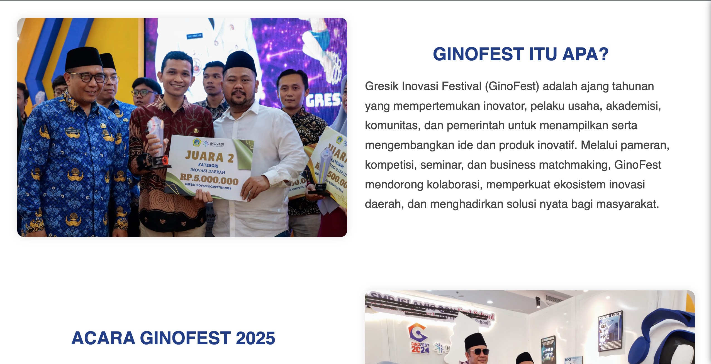
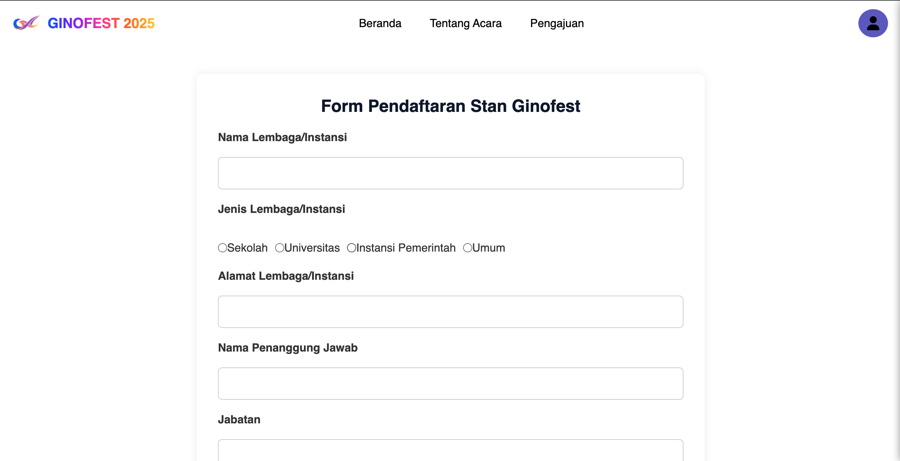
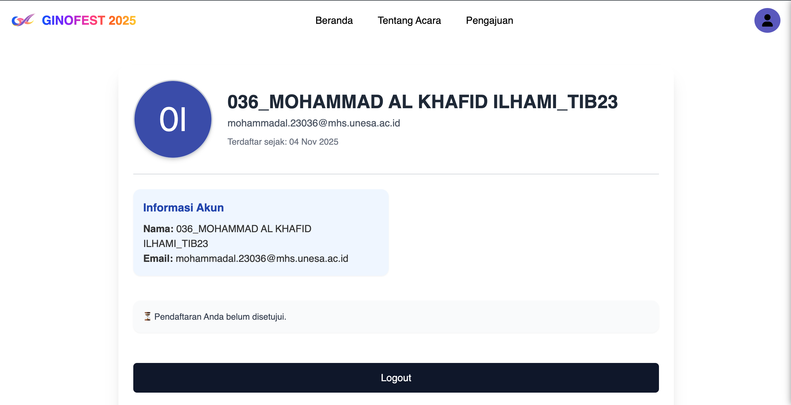
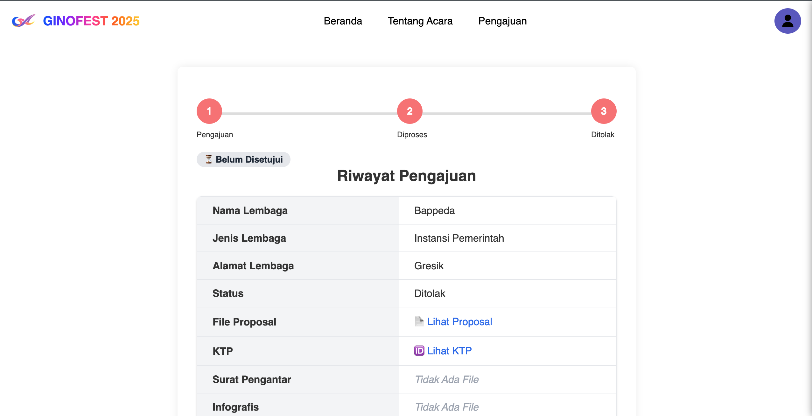
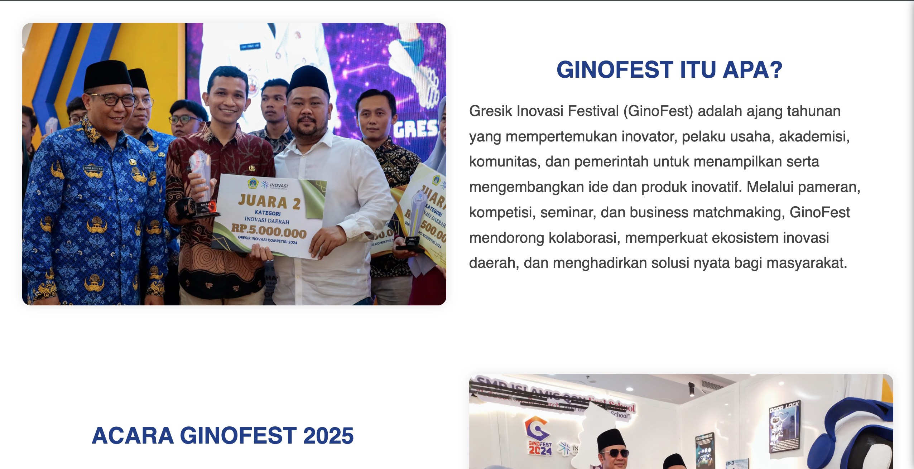
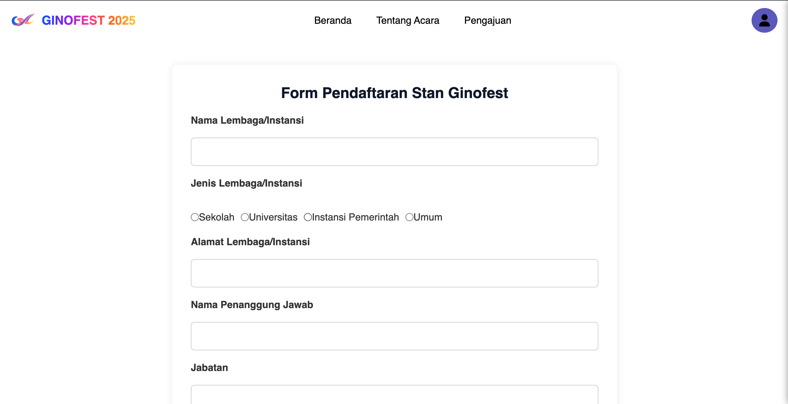
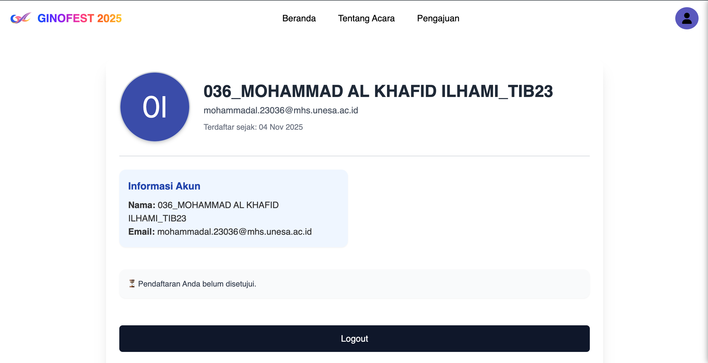
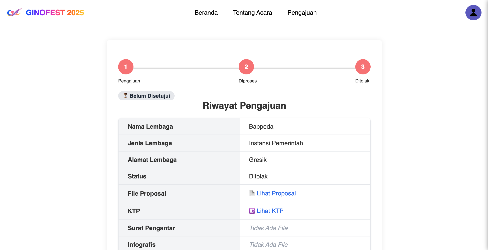

Tentang Proyek
GinoFest (Gresik Inovasi Festival) merupakan ajang tahunan yang digelar Pemerintah Kabupaten Gresik untuk menampilkan berbagai inovasi masyarakat, pelajar, mahasiswa, serta pelaku UMKM. Acara ini menjadi wadah kolaborasi antara pemerintah, akademisi, dan industri untuk memperkuat ekosistem inovasi daerah.
Dalam proyek ini, saya mengembangkan website pendaftaran stand pameran yang mempermudah peserta mendaftar dan mengunggah informasi produk mereka secara daring. Sistem dirancang agar cepat, efisien, dan ramah pengguna, dengan antarmuka modern serta tampilan responsif di berbagai perangkat.
Fitur Utama
- Form pendaftaran online dengan validasi otomatis
- Dashboard admin untuk memantau peserta pameran
- Tracking pengajuan pendaftaran
- Desain responsif untuk desktop dan mobile
Teknologi yang Digunakan
Framework Laravel
HTML
CSS
JavaScript
PHP
MySQL
Preview
 






